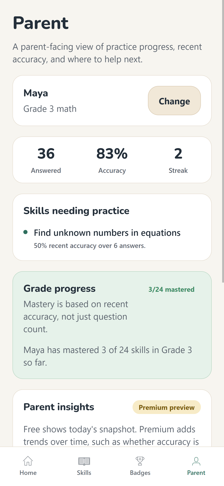

Real Progress, Not Vanity Stats
A parent overview shows questions answered, accuracy, and streak at a glance, plus which California math skills still need practice. It is the payoff parents actually care about, front and center, with no setup required.